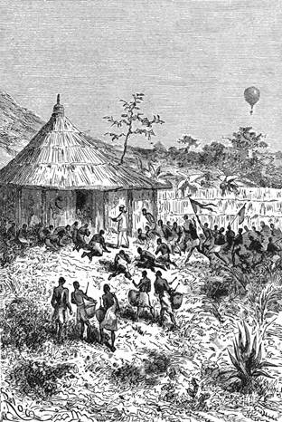
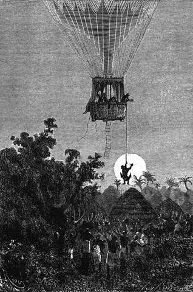

Kaze. – Hlučný trh. – Příjezd Viktorie. – Vagangové. – Měsíčané. – Doktorova procházka. – Obyvatelstvo. – Královské tembe. – Ženy královy. – Královský opilec. – Joe uctíván za boha. – Jak se tančí na měsíci. – Náhlý obrat. – Dva měsíce na obloze. – Nestálost božských velikánů.
Kaze, důležité místo střední Afriky, není nikterak městem; neníť města ve vnitrozemí, ať pravdu díme. Kaze je pouhým rozborem šesti rozhlehlých prohlubin. V nich uzavřeny jsou domy a otrocké chyše s dvorky a zahrádkami pečlivě pěstovanými; daří se tam ku podivu cibule, sladké zemáky, okurky, dýně a lanýže výtečné chuti.
Uňamvezy je vlastní zemí Měsíčnou, úrodný a nádherný park africký; uprostřed prostírá se kraj Uňanembe, rozkošné území, kde žije lenivě několik rodin omanských, které jsou Araby čisté krve.
Provozovali dlouho obchod v africkém vnitrozemí a v Arabii; kupčili s klím, slonovinou, kartounem, otroky; jich karavany procházely těmito rovníkovými krajinami; docházejí posud na pobřeží nakupovat věci přepychu a rozkoše pro zbohatlé obchodníky, kteří mezi ženami a sluhy vedou v této okouzlivé končině život co nejméně pohnutý, nejstejnoměrnější, stále se povalujíce, smějíce, kouříce nebo spíce.
Kolem těchto prohlubin četné chatrče tuzemců, rozsáhlá tržiště, pole konopná a durmanová, krásné stromy a milý chládek: toť Kaze.
Tam scházejí se namnoze karavany: z jihu s otroky a s náklady slonoviny, ze západu pak karavany, dopravující bavlněné látky a drobné skleněné zboží kmenům u velkých jezer.
Pročež panuje na tržištích věčný ruch, bezejmenný hluk, v němž splývá křik nosičů smíšené krve, víření bubnův a troubení rohů, ržání mezků, hýkání oslů, zpěv žen, vřískot dětí a rány rákoskou džemadarovou[35], jež dává takt v této pastýřské symfonii.
Tu jsou rozloženy bez ladu, ba v milém neladu křiklavé látky, skleněné korály, sloní kly, zuby nosorožčí a žraločí, med, tabák, bavlna; tu se provozují obchody nejpodivnější, při nichž všeliká věc má cenu jen podle chtivosti, kterou vzbuzuje.
Najednou ztišil se všechen ten vír a ruch, umlkla všechna ta vřava. Objevilať se Viktorie v povětří; vznášela se velebně a sestupovala ponenáhlu neodchylujíc se od kolmice. Muži, ženy, děti, otroci, kupci, Arabové a černoši, vše se rozprchlo a skrylo v „tembech“ a chyších.
„Milý Samuele,“ pravil Kennedy, „neustaneme-li naháně takového strachu, bude nám za těžko vejíti v obchodní styky s oněm lidmi.“
„Nicméně“ ozval se Joe, „bylo by velice snadno provést obchod. Stačilo by sestoupit pokojně, odnést nejdražší zboží a nestarat se o prodavače. Člověk by zbohatl.“
„Aj!“ odvětil doktor, „tito domorodci měli strach v prvním okamžiku. Ale za nedlouho přijdou zase z pověry nebo ze zvědavosti.“
„Myslíte, pane?“
„Však uvidíme; leč opatrnost káže, abychom se příliš nepřibližovali; Viktorie není balonem krytým ani obrněným; pročež není chráněna ani proti kulce, ani proti šípu.“
„Což hodláš, milý Samuele, zapřísti rozhovor s těmito Afričany?“
„Bude-li lze, proč ne?“ odpověděl doktor; „v Kaze jsou zajisté arabští kupci, vzdělanější, méně divocí. Pamatuji se, že pánové Burton a Speke nemohli než chváliti pohostinnost zdejších obyvatelův. A proto můžeme se odvážiti dobrodružství.“
Viktorie přiblíživši se nepozorovaně k zemi, zachytila se jednou z kotev v koruně stromové nedaleko tržiště.
Veškero obyvatelstvo povylezlo v tu chvíli ze svých děr; hlavy vykukovaly nedůvěřivě. Několik Vagangů, jež bylo poznati po kuželovitých ozdobách z lastur, vystoupilo směle; byli to místní čarodějové. Měli na pásech zavěšeny černé tykvičky pomazané tukem a všeliká kouzla, vyznačující se ostatně nečistotou v pravdě doktorskou.
Ponenáhlu přidružil se k nim dav, ženy a děti je obstoupily, bubeníci tloukli do bubnů jak o závod, ruce se spínaly a vztahovaly k nebesům.

Doktor Fergusson uvítán s velikými poctami.
„Tímto způsobem prosí,“ pravil doktor Fergusson; „nemýlím-li se, jsme k tomu určeni, abychom hráli velkou úlohu.“
„Nuže, pane, hrejte ji!“
„Ty, milý Joe, staneš se třebas bohem.“
„Aj, pane, to mi hrubě nevadí, a kadidlo nebylo by mi nevděk.“
V tom pokynul jeden z čarodějů, Myanga, a všechen ten povyk ustoupil rázem úplnému tichu. Promluvil několik slov k cestovatelům, ale neznámým jazykem.
Doktor Fergusson neporozuměv prohodil na zdařbůh několik arabských výrazův, i bylo mu hned odpověděno tímto jazykem.
Řečník spustil dlouhou promluvu velice květnatou, která poslouchána velmi pozorně; doktor poznal brzy, že považují Viktorii do opravdy za měsíc sám soudíce, že se tomuto milostivému bohu uráčilo sestoupiti do města s třemi svými syny, kterážto čest nepřijde prý nikdy v nepamět v této zemi sluncem milované.
Doktor odpověděl velmi důstojně, že měsíc koná každých tisíc let okružní cestu nemoha odolati touze, aby se ukázal z blízka svým zbožňovatelům, a že je proto žádá, aby se neostýchali, a používajíce jeho božské přítomnosti, vyjevili mu své potřeby a svá přání.
Na to odvětil čaroděj, že král, „mvani“, nemocný již dlouhá léta, žádá si nebeské pomoci, i zval měsíčany, aby se k němu odebrali.
Doktor oznámil pozvání svým druhům.
„A ty se chceš odebrat k tomu černošskému králi?“ zeptal se lovec.
„Ovšem. Zdá se mi, že tito lidé nemají nic zlého za lubem; ovzduší je klidné; není ani vánku! Nemáme proč se strachovati o Viktorii.“
„Ale co počneš?“
„Upokoj se, milý Dicku; trochu léku pomůže mi z nesnází.“
Potom obrátil se k davu:
„Měsíc slitoval se nad panovníkem drahým všem dětem uňamvezským, svěřil nám starost o jeho vyléčení. Nechať se připraví k naší návštěvě!“
Povyk, zpěv a radostné projevy strhly se zdvojenou silou, a všechno to náramné mraveniště černých hlav hnulo se pochodem.
„Nyní, přátelé,“ řekl doktor Fergusson, „dlužno uvážiti vše; možná, že budeme mimo nadání nuceni kvapem odjeti. Pročež zůstane Dick v loďce a postará se dmuchavkou o dostatečnou sílu vzestupnou. Kotva vězí pevně; není se ničeho obávati. Já slezu na zemi. Joe mne doprovodí; avšak neodstoupí od konce řebříku.“
„Jakže! ty půjdeš sám k tomu mouřenínovi?“ zvolal Dick.
„Jakže! pane Samuele,“ zvolal Joe, „což nechcete, abych šel s vámi až na místo?“
„Ne, půjdu sám; tito hodní lidé domýšlejí se, že je veliký jejich bůh měsíc poctil návštěvou; jsem chráněn pověrou; pročež nebojte se ničeho a setrvejte každý na stanovisku, které vám vykazuji.“
„Když tomu chceš…“ odpověděl lovec.
„Dbej, ať se plyn roztahuje“
„Buď bez starosti.“
Křik domorodců se rozmáhal; naléhali důrazně o nebeskou pomoc.
„Hle! hle!“ pravil Joe. „Zdá se mi, že si počínají poněkud pánovitě vůči hodnému měsíci a jeho božským synům.“
Doktor nesa s sebou cestovní lékárničku slezl na zemi, kam jej předešel Joe. Tento tváře se vážně a důstojně, jak se slušelo, usedl u spodku řebříku po arabsku s nohama pod sebe podloženýma, a část davu obstoupila jej uctivým kruhem.
Zatím bral se doktor Fergusson zvolna ke „královskému tembu“, ležícímu dosti daleko za městem, maje v čele průvod hřmotících nástrojů hudebních a za sebou družinu nábožných věřících; byly asi tři hodiny a slunce zářilo stkvěle; činilo zajisté, co mohlo, pro tu příležitost.
Doktor vykračoval si důstojně; Vagangové jej oblopili a bránili přístup davu. Fergussona dohonil brzy levoboček králův, mladík zevnějšku dosti slušného, jenž byl po domácím obyčeji jediným dědicem otcovského jmění s vyloučením dětí manželských; padl na zemi před synem měsíce, který jej pozdvihl milostivým posunkem.
Za tři čtvrti hodiny dospěl tento nadšený průvod stinnými stezkami prostřed vší nádhery tropického rostlinstva ke královskému paláci, jakési čtverhranné budově, Ititeňa řečené a stojící na svahu pahorku. Jakási veranda, utvořená doškovou střechou, objímala stavení kolem do kola, spočívajíc na dřevěných kolech, které jevily nehrubě zdařilé pokusy řezby. Stěny byly ozdobeny dlouhými čarami červenavé hlíny, jež měly představovati podoby lidské a hadí; tyto byly ovšem podařenější než ony. Kryt tohoto příbytku nepřiléhal na samé zdi, pročež mohl vzduch volně provívati; ostatně oken nebylo; sotva cosi dveřím podobného.
Doktor Fergusson uvítán s velikými poctami od životních strážcův a oblíbenců, lidí z krásného plemene Vaňamvezů, čistého rázu národů středoafrických, silných a složitých, vynikajících pěknými tvary a pěkným vzhledem. Měli vlasy rozčesány na velký počet cůpků na plece jim splývajících; a tváře od skrání až po ústa pruhovány zářezy černou nebo modrou barvou napuštěnými.
V uších ohyzdně roztažených tkvěly jim dřevěné kotouče a desky z gumy kopalové; byli přioděni látkami křiklavých barev a vojáci ozbrojeni assagaji, luky, šípy s háčky otrávenými pryšcovou šťávou, tesáky, „simy“, dlouhými to šavlemi jako pila zoubkovanými, a sekerami pro jednu ruku.
Doktor vstoupil do paláce. Po jeho příchodě zdvojil se přes královu nemoc povyk už dříve strašlivý. Všiml si, že na podvoji dveří visí jako talismany zaječí ocasy a zebří hřívy. Byl od zástupu žen Jeho Veličenstva přivítán běžnými zvuky „upata“, jakéhosi cymbalu urobeného ze dna měděného hrnce, a hřmotem „kilinda“, bubnu zvýší pěti stop, vyhloubeného ze stromového špalku, do něhož dva umělci bušili pěstmi.
Ženy byly namnoze velmi hezké a kouřily smějíce se tabák a thang z velkých černých dýmek; jevily pěkné tvary v dlouhých řízách dobře jim slušících a kolem pasu měly zavěšeny zástěry z tykvových vláken. Šest sedělo jich stranou nejsouce nejméně vesely z celé té tlupy, ačkoli na ně čekaly kruté muky. Až by král umřel, měly s ním býti za živa pohřbeny, přece se u věčné samotě vyrážely.
Doktor Fergusson, přehlédnuv jediným mžikem všechen ten souhrn, přistoupil k dřevěnému loži panovníkovu. Spatřil muže asi čtyřicítiletého, úplně otupělého hýřením všeho druhu, jemuž nebylo pomoci. Tato choroba léta se již vlekoucí nebyla ničím jinými nežli věčnou opilostí. Královský ten opilec byl již skorem pozby, vědomí, a všechen čpavek na světě nebyl by ho vzpamatoval.
Oblíbenci a ženy poklekše sklonili se za této slavnostní návštěvy. Několika krůpějemi ostré silice oživil doktor na okamžik to ztupělé tělo; král sebou pohnul a poněvadž byl už po kolik hodin ležel jako mrtvola, nedávající ničím na jevo, že v ní posud bije život, zavdal tento projev podnět ke zdvojenému křiku na počest lékaři.
Doktor maje toho dost, odstrčil rychlým pohybem zbožňovatele příliš dotěrné a vyšel z paláce. Zamířil k Viktorii. Bylo šest hodin večer.
Joe čekal za jeho nepřítomnosti trpělivě u žebříku; dav prokazoval mu největší pocty. Jsa pravým měsíčanem neodmítal jich. Na boha vypadal jako člověk dosti hodný, nijak pyšný, ba i dosti důvěrný k mladým Afričankám, jichž neomrzelo na něj se dívati. Mimo to pouštěl se s nimi do roztomilých řečí.

Kotva uchvátila čaroděje, a balon vyhoupl se s ním do vzdušného prostoru.
„Klanějte se, slečny, klanějte,“ říkal jim, „jsem dobrý chlap, ačkoliv jsem syn bohův!“
Přinášely mu obětní dary, obyčejně uložené ve „mzimech“ neboli fetišových chatách. Záležely v ječných klasech a v „pombé“. Joe pokládal slušným okusiti tento druh piva velmi silného; leč jeho patro nesneslo jeho ostrosti, jakkoli bylo zvyklé vínu a whiskyi.[36] Ušklíbl se strašně, což diváci považovali za milostný úsměv.
A po té jaly se mladé dívky, spustivše zdlouhavou, jednozvukou píseň, provozovati kolem něho vážný tanec.
„A! vy tančíte!“ zvolal. „Hoj! nezůstanu za vámi a ukážu vám, jak se tancuje u nás doma.“
I dal se do úžasného křepčení, kroutě, protahuje, ohýbaje se, tanče po nohou, tanče po kolenou, tanče po rukou, stavě na odiv podivné obraty a přemety, neuvěřitelné postoje, nemožné pitvory, a podávaje takto těm lidem zvláštní pojem o tom, jak bohové tančí na měsíci.
Všichni tito Afričané pak, již v napodobení vyrovnávají se opicím, dovedli za chvilku opětovati jeho způsoby, jeho skoky, jeho kozelce; neušlo jim ani posunku, nezapomněli jediného vrtnutí; nastal pak ruch, shon, vír, jehož nelze ani přibližně vylíčiti. Když byly radovánky v nejlepším proudu, spatřil Joe doktora.
Vracel se spěšnými kroky v davu povykujícím a nespořádaném. Čarodějové a pohlaváři zdáli se býti velmi rozčileni. Obstupovali doktora, tísnili ho, vyhrožovali mu.
Podivný obrat! Co se přihodilo? Či snad král vypustil hloupě ducha v rukou nebeského lékaře?
Kennedy znamenal nebezpečí se svého stanoviska, nechápaje jeho příčiny. Balon silně vzhůru puzený roztaženým plynem, napínal provaz jej poutající, nemoha se dočkati, aby se vznesl do povětří.
Doktor dorazil k řebříku. Pověrečná bázeň držela ještě dav na uzdě, bráníc se dopustiti se násilí na jeho osobě; stoupal kvapem po příčelích a Joe hbitě za ním.
„Ani chvilky není na zmar,“ pravil k němu jeho pán. „Nevybavuj kotvy! Přetneme provaz! Pojď za mnou!“
„Ale co se děje?“ zeptal se Joe vlézaje do loďky.
„Co se stalo?“ divil se Kennedy s karabinou v ruce.
„Pohleďte,“ odpověděl doktor ukazuje na obzor.
„Nuže?“ otázal se lovec.
„Nuže! měsíc!“
Vycházel vskutku měsíc červený a lesklý jak ohnivý kotouč na blankytném pozadí. Byl to věru on! On a Viktorie!
Buď byly dva měsíce, buď nebyli cizinci leč podvodníky, mamiči, nepravými bohy!
Takové byly samozřejmé úvahy davu. Odtud ten náhlý obrat.
Joovi nedalo, aby se hlučně nerozesmál. Obyvatelé kazeští chápajíce, že se jim kořisť vymyká, strhli hrozný ryk, luky, pušky mířily na balon.
Ale jeden z čarodějů pokynul. Zbraně se sklonily; vyšplhal se na strom, zamýšleje uchopiti kotviční vazák a stáhnouti vzducholoď k zemi.
Joe se vztyčil se sekerou v ruce.
„Třeba-li přetít?“ optal se.
„Počkej,“ odvětil doktor.
„Ale ten černoch?…“
„Snad si zachráníme kotvu, a na tom dost. Na přetnutí je vždy dosti času.“
Čaroděj dostav se na strom počínal si tak úsilně, že ulámal větve a vybavil na konec kotvu; nemohouc odolati mocnému napětí balonu, povolila a uchvátila mezi nohama čaroděje, který sedě obkročmo na tomto netušeném létavém oři, vyhoupl se s ním do vzdušného prostoru.
Dav byl všecek ohromen vida jednoho z Vagangův, an se vznáší do výše.
„Hurá!“ vzkřikl Joe, zatím co Viktorie puzena vzestupnou silou stoupala velmi rychle.
„Drží se dobře,“ pravil Kennedy; „malá projížďka mu neuškodí.“
„Máme srazit toho negra jednou ranou?“ tázal se Joe.
„Zda bys se nestyděl?“ namítal doktor. „Vysadíme ho pěkně na zemi, a po tomto dobrodružství, tuším, vzroste jeho kouzelnická moc ku podivu v mysli jeho vrstevníků.“
„Jsou s to, aby si ho povýšili na boha,“ zvolal Joe.
Viktorie dospěla do výše asi tisíce stop. Černoch upínal se na provaz s hroznou křečovitostí. Trval v úmlku, a oči tkvěly mu strnule v důlcích. Jeho hrůza byla smíšena s údivem. Slabý vítr hnal balon za město. Za půl hodiny po té doktor vida, že je kraj liduprázdný, zmírnil plamen dmuchavky a přiblížil se k zemi. Na dvacet stop od ní uzrálo v černochovi náhlé rozhodnutí: seskočil; dopadl na nohy a utíkal směrem ke Kaze, kdežto Viktorie, zbavená najednou přítěže, vznesla se opět do vzduchu.